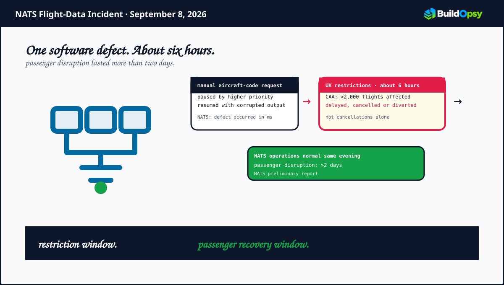
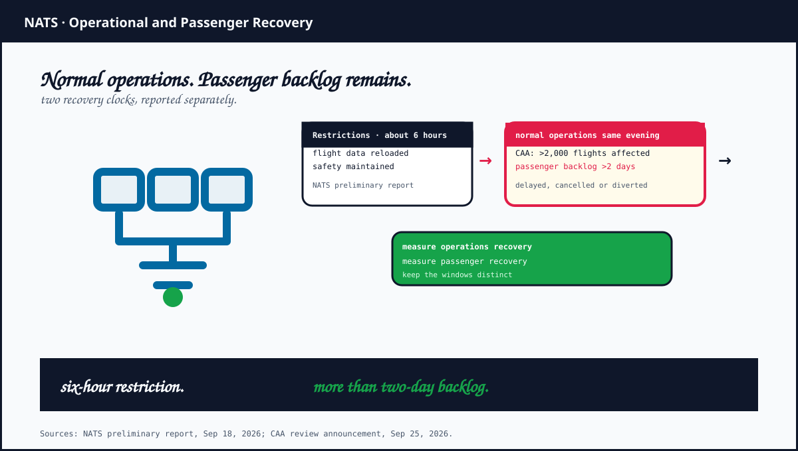

1. A Manual Aircraft-Code Request Resumed Incorrectly
NATS's September 18 preliminary report says the defect was in a small part of the National Airspace System software that allocates aircraft identification codes when controllers make manual requests. Such codes are usually allocated automatically.
While the system processed a manual request, it received a message for a higher-priority activity and paused the request. When processing resumed, the defect caused it to resume incorrectly: the resulting output was corrupted and affected some subsequent flight-data updates. NATS says this happened within a millisecond. With reduced information available to controllers, restrictions were applied to maintain safety.
The defect affected flights handled by London Area Control, mainly higher-level flights above 24,500 feet. NATS says restrictions had to be placed across the UK so the National Airspace System could be restarted and flight data reloaded. NATS also says safety was never in question.
2. Restrictions Ended Before the Backlog Did
NATS says the restrictions lasted some six hours and its operations returned to normal the same evening. It also says it took more than two days for the backlog of passenger disruption to clear, with hundreds of thousands of passengers' travel plans disrupted. Those are different measures: the restriction period describes air-traffic operations; the longer window describes passenger disruption.
On September 25, the UK Civil Aviation Authority said more than 2,000 flights had been delayed, cancelled, or diverted. The CAA's wording combines three outcomes; it is not a count of cancelled flights alone. Neither the preliminary NATS account nor the CAA announcement publishes a count of aircraft or crew displaced, so this article does not estimate one.
3. NATS Says the 2023 Outage Was Unrelated

NATS's chief executive said the September 2026 incident was unrelated to the major August 2023 system outage. The preliminary report identifies a defect in a specific manual aircraft-code process; it does not say that the 2023 failure returned or that the same processing layer failed twice.
The preliminary report describes the operational response: because flight-data information was reduced, restrictions were applied to maintain safety while the National Airspace System restarted and flight data was reloaded. The CAA's independent review will examine the causes, consumer impact, critical-system modernization plans, continuity arrangements, and implementation of earlier recommendations. A final account of the review remains pending.
The NATS incident is a case study in how a short restriction period can create a longer passenger recovery window. The course's first lesson looks at incident evidence and recovery models. Take Lesson 01 →
4. What Went Wrong in the Design
The public record is preliminary. NATS has described the code-allocation defect and its immediate effect, but says a full report will follow. The CAA review is considering continuity plans and implementation of earlier recommendations. Claims about redundancy design, failover options, or internal recovery playbooks should wait for that evidence.
Software recovery and passenger recovery are distinct. NATS reports normal operations the same evening and a passenger-disruption backlog lasting more than two days. Resilience planning should measure both, but the public sources do not give a detailed reconstruction of crew or aircraft movements.
Scope matters. The defect affected London Area Control flight-data processing, while the restart and data reload required UK-wide restrictions. The system-design question is how to restore reliable state safely across that operational scope, not whether controllers should have ignored degraded data.
5. What Should Happen Instead
First, validate resumption after a higher-priority interruption. A request that pauses and resumes should preserve its state or fail safely before it can corrupt downstream flight-data updates.
Second, test restart and reload procedures against the actual system scope. The public account says the defect affected London Area Control but the restart and flight-data reload required UK-wide restrictions. The CAA review is examining continuity arrangements and modernization plans.
Third, track two recovery measures: time until normal operations return and time until passenger disruption clears. Keep their definitions, start points, and evidence separate. Do not infer a crew or aircraft recovery plan from aggregate flight totals.

6. The Verdict
NATS's preliminary report identifies a millisecond-scale defect in how a manual aircraft-code request resumed after a higher-priority message interrupted it. The company says the defect was unrelated to its August 2023 outage, that restrictions lasted some six hours, that operations returned to normal the same evening, and that passenger disruption took more than two days to clear. The CAA reports more than 2,000 flights were delayed, cancelled, or diverted.
The public record does not yet establish the full recovery mechanics or final resilience actions. The CAA says its initial report is due by the end of January 2027 and its final report by March 8, 2027. Until then, the useful lesson is to separate the verified software mechanism and the two recovery windows from open questions about architecture and recovery planning.
A six-hour restriction and a two-day passenger backlog are different recovery measures.
Sources and Method
This article uses NATS's September 18 preliminary report for the software mechanism and recovery timeline, and the CAA's September 25 announcement for the combined count of delayed, cancelled, or diverted flights and the independent-review schedule. No crew, aircraft, passenger-compensation, or financial-loss estimate is modeled here.